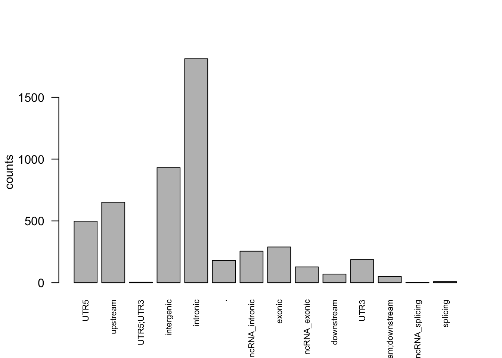

Last updated: 2020-07-21
Checks: 6 1
Knit directory: gene_level_fine_mapping/
This reproducible R Markdown analysis was created with workflowr (version 1.6.1). The Checks tab describes the reproducibility checks that were applied when the results were created. The Past versions tab lists the development history.
Great! Since the R Markdown file has been committed to the Git repository, you know the exact version of the code that produced these results.
Great job! The global environment was empty. Objects defined in the global environment can affect the analysis in your R Markdown file in unknown ways. For reproduciblity it’s best to always run the code in an empty environment.
The command set.seed(20200622) was run prior to running the code in the R Markdown file. Setting a seed ensures that any results that rely on randomness, e.g. subsampling or permutations, are reproducible.
Great job! Recording the operating system, R version, and package versions is critical for reproducibility.
Nice! There were no cached chunks for this analysis, so you can be confident that you successfully produced the results during this run.
Using absolute paths to the files within your workflowr project makes it difficult for you and others to run your code on a different machine. Change the absolute path(s) below to the suggested relative path(s) to make your code more reproducible.
| absolute | relative |
|---|---|
| /Users/nicholeyang/Desktop/gene_level_fine_mapping/data/dt_annov_merged.csv | data/dt_annov_merged.csv |
| /Users/nicholeyang/Desktop/gene_level_fine_mapping/data/dt_neg_tss.RData | data/dt_neg_tss.RData |
Great! You are using Git for version control. Tracking code development and connecting the code version to the results is critical for reproducibility.
The results in this page were generated with repository version 48b7920. See the Past versions tab to see a history of the changes made to the R Markdown and HTML files.
Note that you need to be careful to ensure that all relevant files for the analysis have been committed to Git prior to generating the results (you can use wflow_publish or wflow_git_commit). workflowr only checks the R Markdown file, but you know if there are other scripts or data files that it depends on. Below is the status of the Git repository when the results were generated:
Ignored files:
Ignored: .DS_Store
Ignored: .Rproj.user/
Note that any generated files, e.g. HTML, png, CSS, etc., are not included in this status report because it is ok for generated content to have uncommitted changes.
These are the previous versions of the repository in which changes were made to the R Markdown (analysis/create_training_set.Rmd) and HTML (docs/create_training_set.html) files. If you’ve configured a remote Git repository (see ?wflow_git_remote), click on the hyperlinks in the table below to view the files as they were in that past version.
| File | Version | Author | Date | Message |
|---|---|---|---|---|
| Rmd | 48b7920 | yunqiyang0215 | 2020-07-21 | wflow_publish(“analysis/create_training_set.Rmd”) |
annov_merged = read.csv("/Users/nicholeyang/Desktop/gene_level_fine_mapping/data/dt_annov_merged.csv")head(annov_merged) X gene_id gene_name variant_id pip gene_chr
1 1 ENSG00000122477 LRRC39 chr1_100178174_A_G_b38 0.633113 1
2 2 ENSG00000162694 EXTL2 chr1_100895622_C_T_b38 0.573248 1
3 3 ENSG00000054523 KIF1B chr1_10211630_C_G_b38 0.995686 1
4 4 ENSG00000240038 AMY2B chr1_103555063_C_T_b38 0.742527 1
5 5 ENSG00000226822 LINC02785 chr1_108045750_G_A_b38 0.999808 1
6 6 ENSG00000085491 SLC25A24 chr1_108199501_C_G_b38 0.809010 1
gene_start gene_end gene_width tss_chr tss_position tss_dist_to_snp
1 100148449 100178273 29825 1 100178215 41
2 100872372 100895179 22808 1 100895998 376
3 10210805 10381603 170799 1 10211616 14
4 103553815 103579534 25720 1 103554700 363
5 108040263 108076020 35758 NA NA NA
6 108134043 108200849 66807 1 108200358 857
snp_func snp_refgene
1 UTR5 LRRC39
2 upstream EXTL2;SLC30A7
3 UTR5 KIF1B
4 UTR5;UTR3 AMY2B;RNPC3
5 intergenic VAV3-AS1;SLC25A24
6 intronic SLC25A24
refgene_detail
1 NM_001256385:c.-9658C>T;NM_001256386:c.-9658C>T;NM_001256387:c.-9658C>T;NM_144620:c.-9658C>T
2 dist=468
3 NM_001365952:c.-20699G>C
4 NM_020978:c.-16540T>C;NM_017619:c.*42T>C
5 dist=51143;dist=88293
6 .categ = unique(annov_merged$snp_func)
categ [1] UTR5 upstream UTR5;UTR3
[4] intergenic intronic .
[7] ncRNA_intronic exonic ncRNA_exonic
[10] downstream UTR3 upstream;downstream
[13] ncRNA_splicing splicing
14 Levels: . downstream exonic intergenic intronic ... UTR5;UTR3obs = rep(NA, length(categ))
for (i in 1:length(obs)){
obs[i] = sum(annov_merged$snp_func == categ[i])
}
barplot(obs, names.arg = c(as.character(categ)), cex.names=0.7, las = 2, ylab = 'counts')
train = annov_merged[annov_merged$snp_func != 'UTR5;UTR3' & annov_merged$snp_func != 'ncRNA_intronic' &
annov_merged$snp_func != 'ncRNA_exonic' & annov_merged$snp_func != 'upstream;downstream' &
annov_merged$snp_func != '.', ]
## some snps have 2 reference genes
refgenes = strsplit(as.character(train$snp_refgene), ';')
train$refgene1 = unlist(lapply(refgenes, function(x) x[1]))
train$refgene2 = unlist(lapply(refgenes, function(x) x[2]))
train$refgene2[is.na(train$refgene2)] = '999'
train2 = train[, c('gene_id','gene_name', 'variant_id', 'snp_func',
'snp_refgene', 'refgene_detail', 'refgene1', 'refgene2', 'tss_dist_to_snp')]## 1. gene-snp pairs where associated gene = reference gene
sub_train1 = train2[as.character(train2$gene_name) == train2$refgene1 | as.character(train2$gene_name) == train2$refgene2, ]
## 2. gene-snp pairs where associated gene != reference gene
sub_train2 = train2[as.character(train2$gene_name) != train2$refgene1 &
as.character(train2$gene_name) != train2$refgene2, ]pos1 = sub_train1
pos1$UTR5 = ifelse(pos1$snp_func == 'UTR5', 1, 0)
pos1$UTR3 = ifelse(pos1$snp_func == 'UTR3', 1, 0)
pos1$exon = ifelse(pos1$snp_func == 'exonic', 1, 0)
pos1$intron = ifelse(pos1$snp_func == 'intronic', 1, 0)
pos1$upstream = ifelse(pos1$snp_func == 'upstream', 1, 0)
pos2 = sub_train2
pos2$UTR5 = rep(0, dim(pos2)[1])
pos2$UTR3 = rep(0, dim(pos2)[1])
pos2$exon = rep(0, dim(pos2)[1])
pos2$intron = rep(0, dim(pos2)[1])
pos2$upstream = rep(0, dim(pos2)[1])
train_pos = rbind(pos1, pos2)
train_pos$y = rep(1, dim(train_pos)[1])In positive set, for a snp where associated gene is not the reference gene. Then reference gene-snp will be the gene-snp pair.
the genes within 1mb of all the unique snps in the positive set.
## source1: e.g. geneA associated with snpA, but snpA reference to geneB. geneB-snpA is a negative gene-snp pair here
neg1 = sub_train2
neg1$UTR5 = ifelse(neg1$snp_func == 'UTR5', 1, 0)
neg1$UTR3 = ifelse(neg1$snp_func == 'UTR3', 1, 0)
neg1$exon = ifelse(neg1$snp_func == 'exonic', 1, 0)
neg1$intron = ifelse(neg1$snp_func == 'intronic', 1, 0)
neg1$upstream = ifelse(neg1$snp_func == 'upstream', 1, 0)
neg1$y = rep(0, dim(neg1)[1])load("/Users/nicholeyang/Desktop/gene_level_fine_mapping/data/dt_neg_tss.RData")
head(dt_neg_tss) gene_name seqnames start end width strand.x type
37846 DPM1 20 50934867 50958555 23689 - gene
120661 SCYL3 1 169849631 169894267 44637 - gene
120665 SCYL3 1 169849631 169894267 44637 - gene
120663 SCYL3 1 169849631 169894267 44637 - gene
15473 C1orf112 1 169662007 169854080 192074 + gene
15472 C1orf112 1 169662007 169854080 192074 + gene
gene_id.x gene_biotype var_id SNP_loc
37846 ENSG00000000419 protein_coding chr20_50794732_A_G_b38 50794732
120661 ENSG00000000457 protein_coding chr1_169661963_G_A_b38 169661963
120665 ENSG00000000457 protein_coding chr1_169605649_C_T_b38 169605649
120663 ENSG00000000457 protein_coding chr1_169443797_C_T_b38 169443797
15473 ENSG00000000460 protein_coding chr1_169891332_G_A_b38 169891332
15472 ENSG00000000460 protein_coding chr1_169605649_C_T_b38 169605649
gene_id.y chr tss_position strand.y dist_to_snp
37846 ENST00000371588 2 50958550 - 163818
120661 ENST00000367770 1 169888888 - 226925
120665 ENST00000367770 1 169888888 - 283239
120663 ENST00000367770 1 169888888 - 445091
15473 ENST00000413811 1 169795921 + 95411
15472 ENST00000496973 1 169795043 + 189394## find the genes within 1mb for the unique snp set.
unique_snp = unique(as.character(train2$variant_id))
indx = unlist(lapply(unique_snp, function(x) which(dt_neg_tss$var_id == x)))
neg2 = dt_neg_tss[indx, ]## remove the gene-snp pairs already in the negative set1.
neg2_remove_indx = c()
for (i in 1:dim(sub_train2)[1]){
gene_name = sub_train2[i, ]$refgene1
snp_id = sub_train2[i, ]$variant_id
indx = which(as.character(neg2$gene_name) == as.character(gene_name) & as.character(neg2$var_id) == as.character(snp_id))
neg2_remove_indx = c(neg2_remove_indx, indx)
}neg2 = neg2[-neg2_remove_indx, ]
neg2$UTR5 = rep(0, dim(neg2)[1])
neg2$UTR3 = rep(0, dim(neg2)[1])
neg2$exon = rep(0, dim(neg2)[1])
neg2$intron = rep(0, dim(neg2)[1])
neg2$upstream = rep(0, dim(neg2)[1])
neg2$y = rep(0, dim(neg2)[1])train_pos_all = train_pos[, c('gene_name', 'variant_id', "UTR5", "UTR3", "exon",
"intron", "upstream", 'tss_dist_to_snp', "y")]
sub_train_neg1 = neg1[, c('snp_refgene', 'variant_id', "UTR5", "UTR3", "exon",
"intron", "upstream", 'tss_dist_to_snp', "y")]
colnames(sub_train_neg1) = c('gene_name', 'variant_id', "UTR5", "UTR3", "exon",
"intron", "upstream", 'tss_dist_to_snp', "y")
sub_train_neg2 = neg2[, c('gene_name', 'var_id', "UTR5", "UTR3", "exon",
"intron", "upstream", 'dist_to_snp', "y")]
colnames(sub_train_neg2) = c('gene_name', 'variant_id', "UTR5", "UTR3", "exon",
"intron", "upstream", 'tss_dist_to_snp', "y")
train_neg_all = rbind(sub_train_neg1, sub_train_neg2)
# save(train_pos_all, train_neg_all, file = 'training.RData')
sessionInfo()R version 3.6.3 (2020-02-29)
Platform: x86_64-apple-darwin15.6.0 (64-bit)
Running under: macOS Catalina 10.15.5
Matrix products: default
BLAS: /Library/Frameworks/R.framework/Versions/3.6/Resources/lib/libRblas.0.dylib
LAPACK: /Library/Frameworks/R.framework/Versions/3.6/Resources/lib/libRlapack.dylib
locale:
[1] en_US.UTF-8/en_US.UTF-8/en_US.UTF-8/C/en_US.UTF-8/en_US.UTF-8
attached base packages:
[1] stats graphics grDevices utils datasets methods base
other attached packages:
[1] workflowr_1.6.1
loaded via a namespace (and not attached):
[1] Rcpp_1.0.4 rprojroot_1.3-2 digest_0.6.25 later_1.0.0
[5] R6_2.4.1 backports_1.1.5 git2r_0.26.1 magrittr_1.5
[9] evaluate_0.14 highr_0.8 stringi_1.4.6 rlang_0.4.5
[13] fs_1.3.2 promises_1.1.0 whisker_0.4 rmarkdown_2.1
[17] tools_3.6.3 stringr_1.4.0 glue_1.3.2 httpuv_1.5.2
[21] xfun_0.12 yaml_2.2.1 compiler_3.6.3 htmltools_0.4.0
[25] knitr_1.28